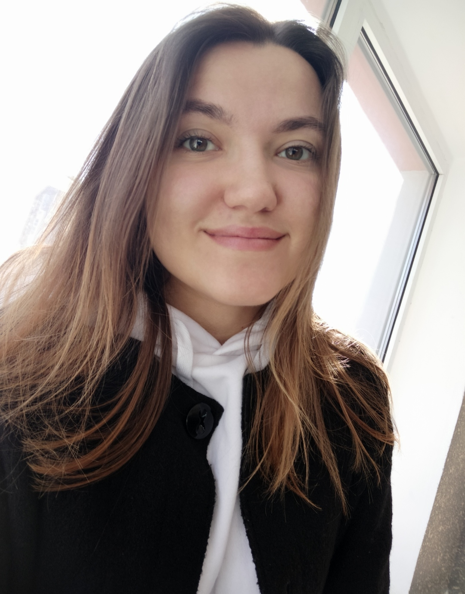

Arina Morozova

Arina Morozova, 21 years old. I study at the ecological institute. I can
play the piano and sing in the choir.
I worked as a volunteer and seller, but now I want to master an
interesting and popular profession. I went in for dancing,
volleyball.
I study several foreign languages:
Now I am studying HTML, CSS, JavaScript. Hope to find my place in the IT field soon.
The level of English is B1. I never miss an opportunity to chat with a
native speaker.
In 2014 I went to a linguistic camp. I have many friends who live in
Belgium, France.
Last year I lived for six months with girls from Iran. Our communication
was in English.